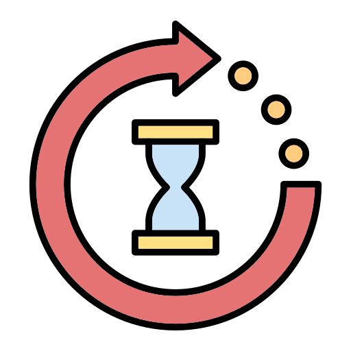

Daur Ulang/Pengomposan Sampah Rumah Tangga
Pengomposan adalah proses alami penguraian bahan organik oleh mikroorganisme yang menghasilkan kompos, yaitu pupuk alami berguna untuk menyuburkan tanah.


Manfaat
Manfaat Pengomposan
Ada 4 Manfaat Pengomposan Sampah Rumah Tangga
-

Mengurangi Jumlah Sampah
Mengurangi Jumlah dan Berat Sampah Yang Akan Dibuang ke TPA
Mengurangi polusi visual, air, dan tanah
-

Pupuk Alami
Menghasilkan Pupuk Alami Yang Bermanfaat Bagi Tanaman dan Tanah
Menghasilkan Pupuk Hijau dan Kompos
-
Polusi Sampah Organik
Mengurangi Polusi Dari Sampah Organik Yang Membusuk.
Gas Metana, Gas Amonia, Asam Sulfida -

Hemat Biaya
Dapat Menghemat Biaya Pengelolaan Sampah Rumah Tangga
Mengurangi Biaya untuk Jasa Pengelolaan Sampah
Contoh
Contoh Bahan yang Bisa Dikomposkan.
Memiliki beragam contoh
-

Sampah Hijau
Buah, Sayuran, Daun segar, Ampas Kopi dan Teh, Sisa makanan organik
Mengandung Nitrogen Membantu Mempercepat Proses Dekomposisi -
Sampah Kering
Daun Kering, Ranting kecil, Potongan Kayu Kecil, Kertas dan Tisu Bekas, Kulit Kacang, Serbuk Gergaji
Mengandung Karbon, Sumber Energi bagi mikroorganisme -
Sampah Abu
Abu Kayu, Abu Sekam Padi, Arang Hancur, Abu Daun Kering
Mengandung Mineral & Kalium, Memperkaya Nutrisi Kompos -
Sampah Gulma
Lumut, Ganggang, Rumput liar, Batang Tanaman Kecil, Daun dari Tanaman
Mengandung Nitrogen yang Lebih Tinggi, Mempercepat Proses Dekomposisi
Jenis
Jenis Kompos
Memiliki 4 Jenis-Jenis Kompos
-

Kompos Aerobik
Menggunakan Oksigen untuk Proses Dekomposisi, Proses Dekomposisi 2-3 Bulan, Tidak Berbau Busuk
Komposter Berbentuk Drum
-

Kompos Anaerobik
Tidak Menggunakan Oksigen, Proses Dekomposisi 3-6 Bulan, Menghasilkan Gas Metana
Menggunakan Reaktor Biogas
-
Vermikompos
Proses Pengomposan dengan Bantuan Cacing Tanah, Proses Dekomposisi 1-2 Bulan, Menghasilkan Kotoran Cacing
Dilakukan Pada Wadah Khusus -
Kompos Takakura
Menggunakan Inokulan, Proses Dekomposisi 2-4 Minggu, Tidak Berbau Busuk
Berbentuk Keranjang dengan Media Inokulan


Masalah Umum dan Solusinya
Masalah Umum Yang Mungkin Terjadi Pada Saat Membuat Kompos dan Solusinya
-
Bau Busuk
Bahannya Terlalu Basah atau Berminyak
Dengan memberikan bahan kering pada kompos, seperti daun kering, jerami, atau serbuk gergaji, dapat membantu menyerap kelembaban dan mengurangi bau busuk.
-
Kompos Kering
Terlalu Sedikit Air
Dengan memberikan air pada kompos, dapat membantu mempercepat proses dekomposisi dan memperkaya nutrisi tanah, dan aduk secara merata.
-
 Kehadiran Serangga atau Belatung
Kehadiran Serangga atau BelatungAda Sisa Makanan Daging / Susu
Dengan tidak membuang sisa makanan daging atau susu pada kompos, dapat membantu mengurangi serangga atau belatung yang datang.
-
 Proses Yang LambatKurang Oksigen atau Suhu Terlalu Dingin
Dengan memberikan oksigen pada kompos, dapat membantu mempercepat proses dekomposisi dan memperkaya nutrisi tanah, dan aduk secara merata.
-
 Kompos Menggumpal
Kompos MenggumpalTidak ada atau Kurangnya Pengadukan
Dengan melakukan pengadukan secara merata, dapat membantu mempercepat proses dekomposisi dan tidak terjadi penggumpalan kembali
-
 Kehadiran Tikus
Kehadiran TikusWadah Kompos Tidak Tertutup Rapat
Pastikan komposter memiliki tutup yang rapat dan ventilasi cukup kecil agar tikus tidak bisa masuk, serta gunakan jaring kawat agar tidak ada celah bagi hama